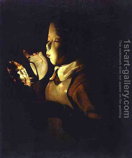

Me’ilah 28 - Temple at the Break of Dawn (Tamid)
After settling the question of who would be doing the first service, separating of ashes, the appointed Kohen would take a key and open a small door that led from the Hall of Fire into the Courtyard. The main door would be opened later on in the day. Two groups of Kohanim followed him, and each carried a torch. Once in the Courtyard, one group walked in the east colonnade, and one in the west, checking the vessels as they walked. If all the vessels were in order, they said, "Peace, all is well."
When they met again, they appointed from among their number the makers of the wafers that the High Priest would bring. At that point, one chosen to remove the ash from the Altar would go to his task, and they would tell him, "Be careful not to touch the shovel until you sanctify your hands and feet with water" - not because he actually had to, but because, being alone, he might be carried away and start the real service, which would be prohibited.
No one entered with him between the Altar and the Antechamber, and he had no lamp, but rather walked in the light of the pyre. They would not see or hear him, until he started pulling the vessel out of the mikveh with a wooden wheel, and the other Kohanim would say, "Time to sanctify the hands and feet" and be ready to do it.
He would take a silver shovel, ascend to the top of the Altar, and scoop from the most consumed, innermost coals. He would then descend, walk along the northern side, and pile the coals on the floor at a distance of three handbreadths from the ramp.
Art: Georges de La Tour - Boy blowing at a Lamp